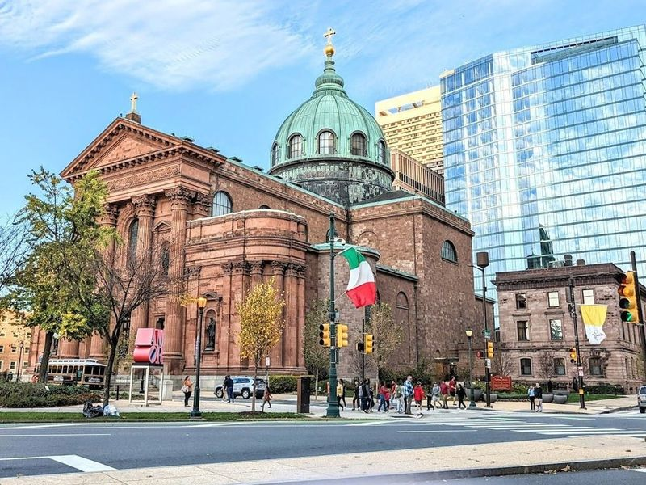
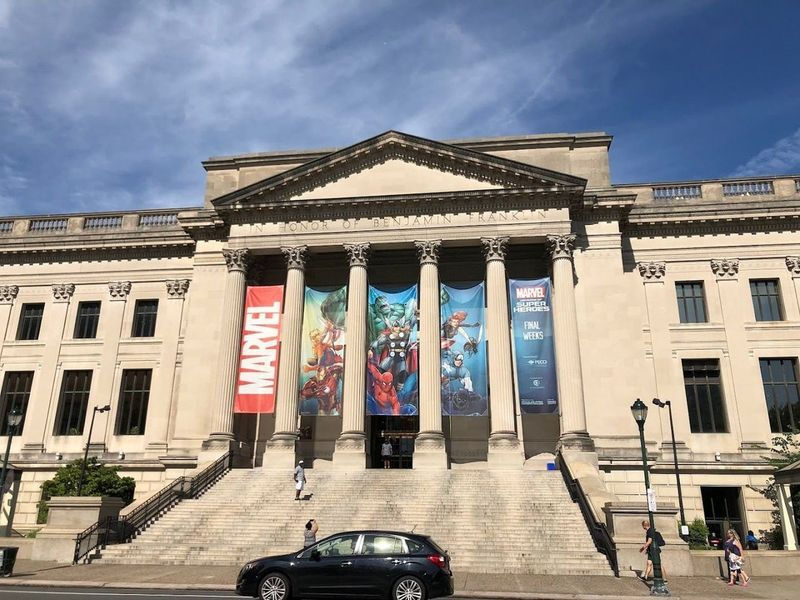
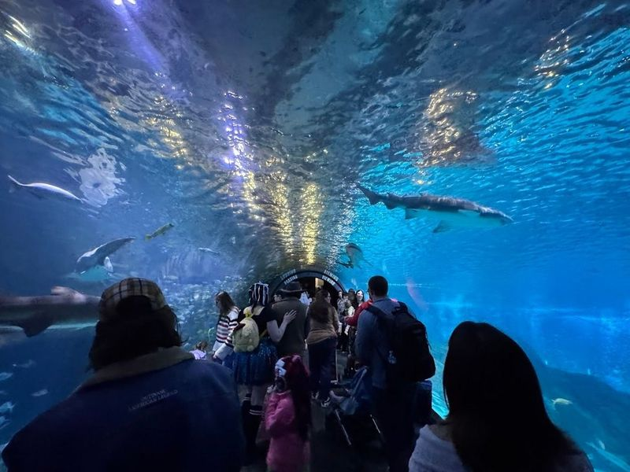
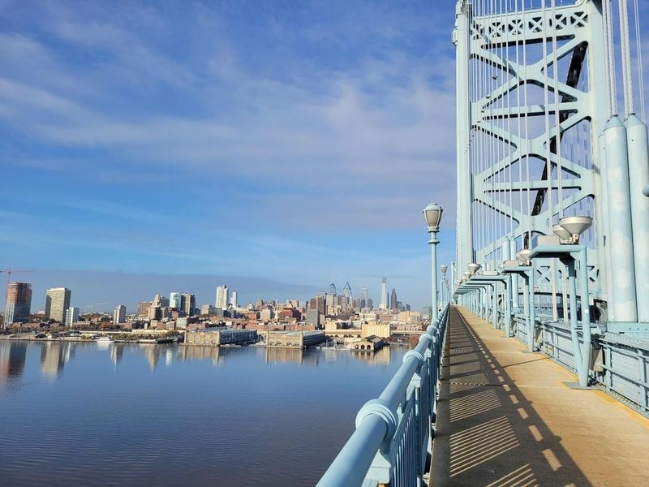
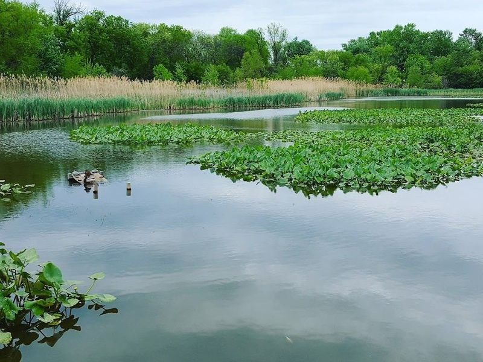

Explore Philadelphia, PA
A Brief History
Philadelphia served as the largest colonial American city and hosted the Continental Congress and Constitutional Convention. Independence Hall, Liberty Bell, and Benjamin Franklin's legacy record Enlightenment-era republican founding on the Delaware River. Museum Mile institutions and Delaware riverfront parks extend founding-era landmarks across Penn's grid.
Attractions Map
Top Sights & Activities

Liberty Bell
The Liberty Bell, last rung in 1846, is a 2,080-pound symbol of freedom with a biblical inscription and a famous crack. It holds great significance as an icon of freedom and independence in America. Located across from Independence Hall on Independence Mall in Philadelphia, the bell offers a perfect view of the historic site. The importance of Independence Hall lies in its role as the location where the Declaration of Independence was signed, making it a crucial part of American history.

Independence National Historical Park
Independence National Historical Park is a sprawling 20-block area in the city, housing significant landmarks such as Independence Hall and the Liberty Bell. The park has seen a steady increase in visitors, with plans to commemorate the 250th anniversary of the Declaration of Independence in 2026. Notable projects for this milestone include restoring the First Bank of the United States and the Declaration House, where Thomas Jefferson penned the historic document.

Independence Hall
Independence Hall is a remarkable Georgian structure steeped in history, where pivotal moments like the signing of the Declaration of Independence and the U.S. Constitution took place. Nestled in Philadelphia's historic Old City, this site offers visitors a chance to step back into 1776.

Carpenters' Hall
Carpenters' Hall, a Georgian building, is renowned for hosting the First Continental Congress in 1774 and other significant historic gatherings. It also housed the Bank of Pennsylvania and a library established by Ben Franklin. The hall has witnessed secret meetings with a French envoy to secure support for the colonies and was even the site of America's first bank robbery.

Independence Visitor Center
The Independence Visitor Center is a must-visit resource hub in Philadelphia, serving as the gateway to the city's popular attractions such as Independence Hall and the Liberty Bell. The center offers multilingual concierge staff who provide comprehensive orientation on the region's culture, history, shopping, and dining options. Visitors can also enjoy interactive exhibits and shop for unique Ben Franklin and Rocky-inspired merchandise at the gift shop.

Franklin Square
Franklin Square is a historic park in Philadelphia that offers various family-friendly attractions. The park features an 18-hole miniature golf course adorned with Philadelphia landmarks, providing a fun and educational experience for visitors. Families can also enjoy a picnic area and indulge in delicious burgers at the onsite eatery.

Rocky Statue
The Rocky Statue, located outside the Philadelphia Museum of Art, is a massive and landmark depicting the fictional boxer Rocky Balboa. Featured in the 1976 film "Rocky," this statue has become a symbol of Philadelphia's culture and a popular tourist attraction. Visitors can recreate the famous scene by running up the steps leading to the museum, just like Sylvester Stallone did in the movie.

Boathouse Row
Boathouse Row is a historic site along the east bank of the Schuylkill River in Philadelphia, dating back to 1853. It consists of 15 19th-century private social and rowing clubhouses that come alive at night with 6,400 LED lights. The energy of Franklin Square and the Oval, as well as nearby attractions like Philadelphia Brewing Company and Adventure Aquarium, make it a great place for a family day out.

Philadelphia Zoo
The Philadelphia Zoo, In Fairmount Park, is a sprawling 42-acre sanctuary for over 1,300 rare and endangered animals. Visitors can explore eco-friendly habitats that offer up-close encounters with creatures ranging from lions to lizards. The zoo also offers a range of attractions and activities such as the Amazon Rainforest Carousel, Lorikeet Encounters, camel safaris, and more.

Reading Terminal Market
Reading Terminal Market is listed among principal sites for Philadelphia within United States. Municipal and regional heritage listings document its place in the historic centre and travellers routes through Philadelphia. Reading Terminal Market is listed among principal sites for Philadelphia within United States.

JFK Plaza (Love Park)
JFK Plaza, also known as Love Park, is a bustling urban plaza in Philadelphia that serves as the entrance to the Benjamin Franklin Parkway. The park features a geyser-like fountain and is home to the famous LOVE sculpture by Robert Indiana. Originally constructed in 1965, the park underwent a multimillion-dollar renovation in 2018, restoring the sculpture and fountain while adding green spaces.

One Liberty Observation Deck
One Liberty Observation Deck is an indoor observatory situated on the 57th floor of a skyscraper in downtown Philadelphia. It provides 360-degree panoramas of the city, including landmarks like City Hall and Elfreths Alley. Visitors can enjoy daytime views or elevate the romance by visiting at night when the city lights create a magical atmosphere.

Rittenhouse Square
Rittenhouse Square is a renowned green space in the heart of Philadelphia, offering picturesque walkways, flowerbeds, and a tranquil reflecting pool. The square hosts frequent events and markets, making it a lively hub for locals and visitors alike. Surrounding the park is the upscale neighborhood known as 'Rittenhouse,' which boasts an array of high-end shopping outlets, dining establishments, and nightlife venues.

Kimmel Center for the Performing Arts
The Kimmel Center for the Performing Arts, a modern glass and steel venue, serves as the home for various performing arts in Philadelphia. It was established in 1996 to provide a space for The Philadelphia Orchestra and other prestigious performing arts companies. The center comprises three major venues: Verizon Hall, a 2500-seat concert hall; Perelman Theatre, a 650-seat recital theater; and SEI Innovation Studio, a black box theater.

Cathedral Basilica of Saints Peter and Paul
The Cathedral Basilica of Saint Peter and Paul is a large Catholic church located in Philadelphia. The church features an imposing facade, a massive dome, ornate main altar, and eight side chapels. The cathedral comfortably holds 2,000 worshippers and is architecturally eminent structures in the city. The interior features beautiful murals, mosaics, and stained glass windows by Constantino Brumidi.

The Franklin Institute
The Franklin Institute is a and family-friendly science museum in Philadelphia, offering numerous interactive exhibits and displays, as well as a planetarium. It is one of the region's most popular science museums with a wide array of kid-friendly exhibitions. Visitors can explore the abundance of museums and historical attractions in Greater Philadelphia, play in the city's expansive parks and playgrounds, and reconnect with animals and nature.

Adventure Aquarium
Adventure Aquarium, located on the Camden Waterfront just minutes from downtown Philadelphia, is a massive aquarium featuring a 3D theater and over 15,000 aquatic animals in two million gallons of water. It boasts unique exhibits including the largest collection of sharks in the Northeast, great hammerhead sharks, hippos, and Little Blue penguins. Visitors can also experience the longest Shark Bridge in the world, a V-shaped rope suspension bridge just inches over Shark Realm.

Benjamin Franklin Bridge
The Benjamin Franklin Bridge, also known as the Delaware River Bridge, is a historic suspension bridge that spans the Delaware River, connecting Philadelphia, PA to Camden, NJ. Built in the 1920s and once holding the title of longest suspension bridge in the world, it played a significant role in advancing American transportation and infrastructure. The bridge features an art deco design by French architect Paul Philippe Cret and Leon Moissieff.

John Heinz National Wildlife Refuge at Tinicum
John Heinz National Wildlife Refuge at Tinicum, located near Philadelphia International Airport, is a surprising natural retreat. It covers over 1,000 acres of marshland and offers more than 10 miles of flat trails ideal for bird watching and hiking. The sanctuary also features boardwalks for wildlife observation and opportunities for canoeing in the sunlit Darby Creek.